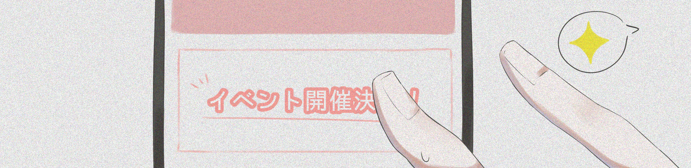
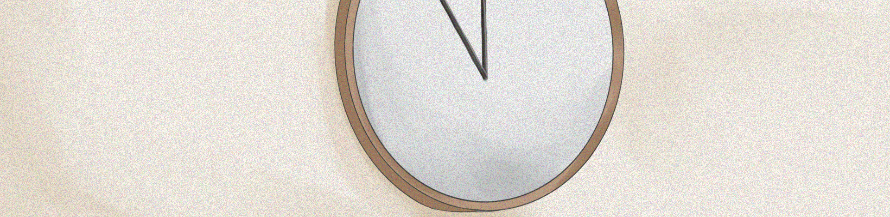

結局、自分はロードをすることにした。
迷いもあった。ギリギリまで考えた。それでも、親友とまた話したい、遊びたい。その想いが、自分の中の迷いを蹴散らしてくれた。
どれだけ先の話かも、起こるかすらもわからない、漠然とした不安に怯えて大切な親友を無くす。それよりも、親友を取り返せるチャンスがあるなら、最後の１回だろうが何だろうが使うしかないと思った。
おかげで親友が事故に遭うのを無事防ぐことができた。方法は、正直自分でもよく分からない。必死すぎてちゃんと覚えていない。だけど、親友が生きている。その結果があるだけで、ロードしてよかったって心底思う。
自分が、如何に普段から適当に生きているかをまざまざと思い知らされた。人生は一度きりだなんて解っていた筈なのに、その重大さを１ミリも理解していなかったな。
やり直しなんてできないし、当たり前に明日が来るとも限らない。だからこそ、その日その時を大切に、噛みしめて過ごさなくてはいけないんだ。失敗した事実を消すことができなくても、そこから成功に繋げることだってできる。もう一度試してみることだってできる。だから、失敗も挫折も恐れる必要はない。そうやって、後悔しないように生きたい。なんだかエゴの塊みたいなこと宣ってるね。もちろんどんな風に生きていきたいかなんてその人の自由だし、押し付けるつもりはさらさらない。ただ自分は、もうあんな苦しい思いも、失ってから気付くなんてことも、二度とごめんだ。だから精一杯足掻いて、精一杯頑張って過ごしていきたい。後悔のないように、大切なものを失わないように。
今日は自分の家で、親友の早口を聞きながらゲームをした。どうやら推しのイベント？が来るらしい。普段の数倍騒がしかった（笑。
騒がしい筈のそれが、とても心地よかった。

明日は何があるだろう。何をしよう。考えるだけでワクワクする！その時々を大切に想うだけで、こんなにも色とりどりで鮮やかな心地になるなんて知らなかった。
もうロードはできない。それでもいい、後悔はない。
でもそうなると、このサイトに書き込む理由もなくなるな。セーブしたってロードできないんだし。でもその日あったことを書き留めないと落ち着いて寝れないんだよね。そろそろ普通の日記帳でも買って移行するべきかな？
・・・よし決めた、もうこのサイトにはアクセスしない！今日で最後にしよう。
親友を救えてよかった。大切なことに気付けてよかった。このサイトを見つけられてよかった。

待って、もうこんな時間！？やっばいもうすぐで就職ガイダンス始まるじゃん、もう出なきゃ。
そんじゃ行ってきます！